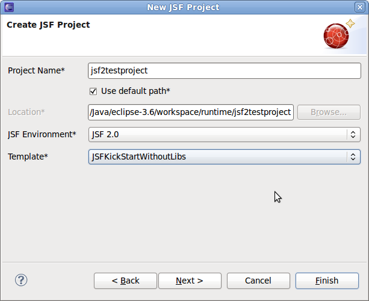
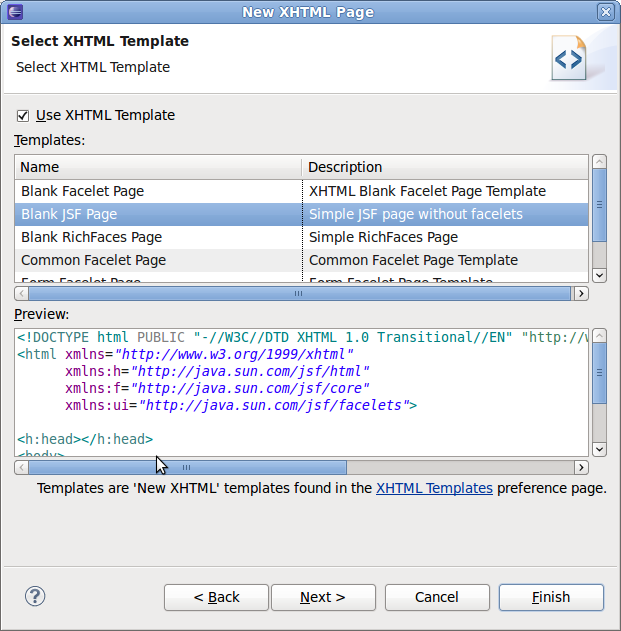
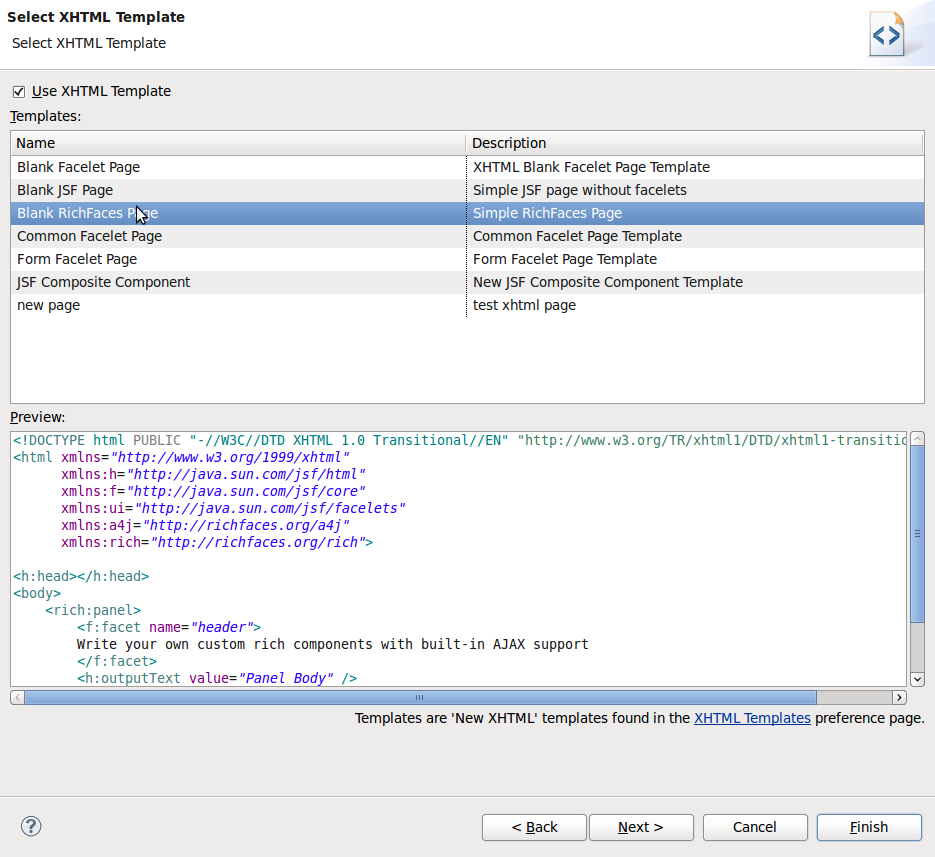
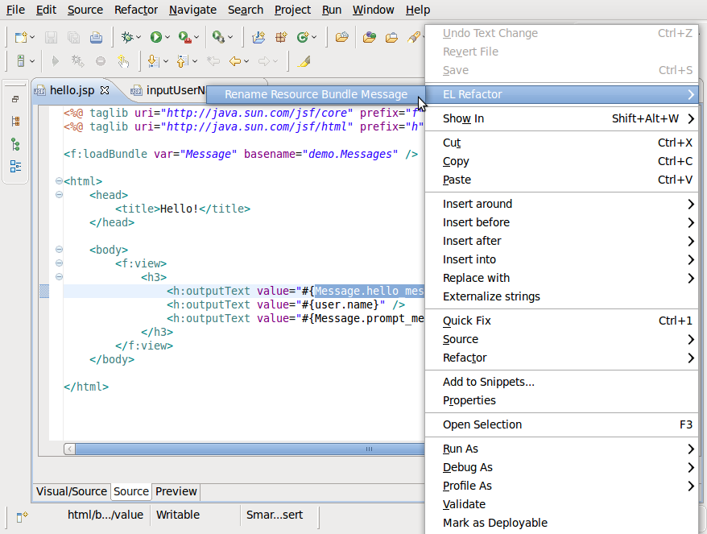
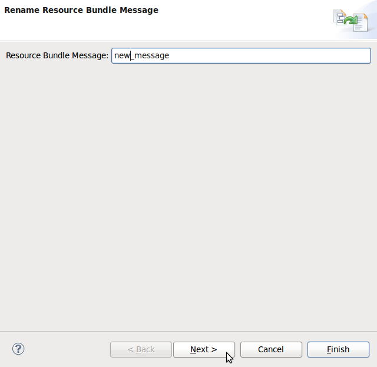
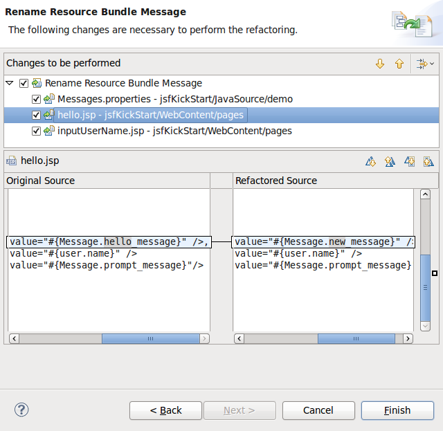
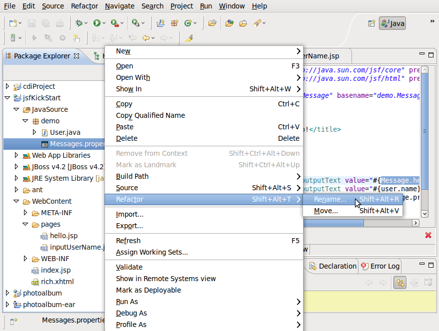
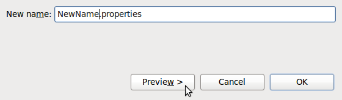
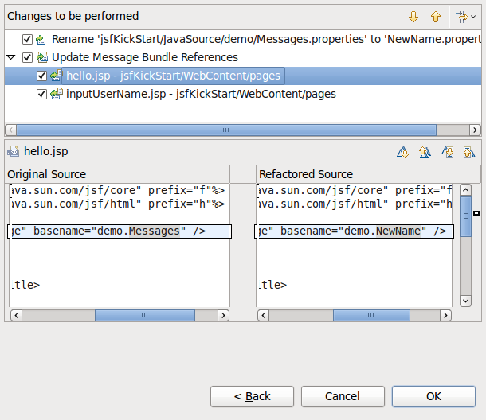
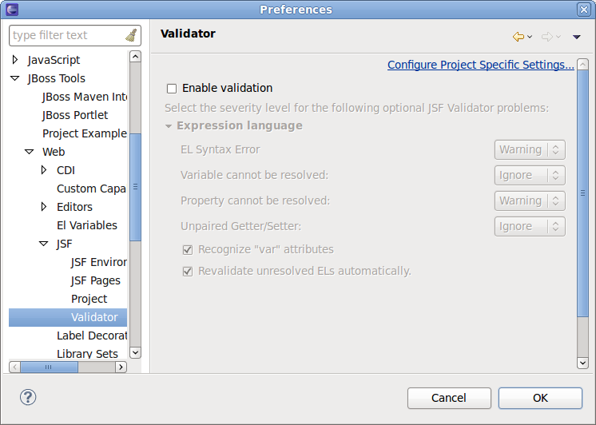

Wizards |
|
|
JSF 2.0 Kick start project template |
JSF 2.0 Kick start project template is avaliable in New JSF Project Wizard.  |
XHTML page templates |
|
|
New XHTML page templates |
There are new *.xhtml page templates in New XHTML Page Wizard: non-template Facelets page and new RichFaces templates.  |
Refactoring |
|
|
Message bundles refactoring. |
Message bundles refactoring is now available from context menu.       |
Project validation |
|
|
Preferences page to enable/disable project validation |
Now it's possible to enable/disable particular project validators based on JBoss KB Project Validator. Such as JSF EL/Seam/CDI validators.  |
|
|
|